Here are some other questions about domino tilings: How many 2n-ominoes can be tiled with n dominoes? Among these 2n-ominoes, which can be tiled with dominoes in the most ways? Which n-ominoes are the most domino-unfriendly, in the sense that the fewest number of dominoes can be packed inside? Which n-ominoes have the property that they can be tiled completely with dominoes even if any k dominoes have already been placed? Are there other interesting questions that belong here?
Trevor Green has improved this bound to D(n) ≤ n+3 for odd n, and D(n) ≤ n/2+8 for even n by using zig-zags like the ones below:
| 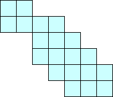 | 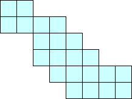 |
Luffingham asks whether other shapes besides L's have the property that D(n) exists for every n. He showed, in a very similar way, that any k × 1 rectangle has this property. I managed to show that other rectangles and several small polyominoes (the L triomino, and the L and S tetrominoes) also behave this way. Does the T tetromino?
Brendan Owen and Trevor Green noticed that a 2 × n rectangle has F(n) tilings, where F(n) is the nth Fibonacci number. Owen noticed that small 2 × n rectangles are the checkerboards with the largest number of domino tilings with 2n squares. Evidently this pattern does not continue. Green also found a similar sequence of polyominoes that gives the Lucas sequence. Both Green and Owen pointed out that D is not increasing, as evidenced by D(20) > D(21).
Trevor Green defines a prime polyomino as one that has no square whose removal would disconnect the polyomino. He calls other polyominoes composite. He notes that D(mn) ≤ D(m) + D(n), since you can always glue two polyominoes together along a single edge (giving a composite polyomino) and generate no new tilings. He also proved that any polyomino with diagonal symmetry has an even number of domino tilings. He conjectures that every positive even number is D(n) for some n, and that if D(n)=k, there is a prime k-omino with n domino tilings.
Let L(n) be the largest number of domino tilings of a 2n-omino. Green proved that L(n) grows exponentially. It is bounded below by the Fibonacci numbers, and it is bounded above by 2n because L(n+1) ≤ 2 L(n). To show this, consider any (2n+2)-omino with L(n+1) tilings. Pick a square within the polyomino that has 2 neighbors. In any tiling of the polyomino, there are no more than 2 ways to place a domino to cover this square. The number of tilings of the remaining 2n squares in either case cannot exceed L(n).
In fact, by exploring 4 × n and 6 × n rectangles, Green improved the lower bound from (1.618)n to (1.715)n. He conjectures L(n)≈C 2n.
Here is some data from Green about L(n) and M(n), the smallest x for which D(x) = 2n.
| n | L(n) | M(n) |
|---|---|---|
| 1 | 1 | 1 |
| 2 | 2 | 2 |
| 3 | 3 | 3 |
| 4 | 5 | 4 |
| 5 | 8 | 6 |
| 6 | 13 | 9 |
| 7 | 21 | 14 |
| 8 | 36 | 20 |
| 9 | 55 | 32 |
| 10 | 95? | 51 |
| 11 | 149? | 80? |
Timothy Luffingham conjectured that the most domino-unfriendly polyominoes are ones like the polyomino below. These (4k+1)-ominoes can only contain k dominoes.
Luffingham also proved that in any polyomino containing at least 6 squares, it is possible to place 2 dominoes so that the rest cannot be entirely tiled with dominoes.
| n | D(n) | Example |
|---|---|---|
| 1 | 2 | |
| 2 | 4 | |
| 3 | 6 | 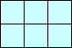 |
| 4 | 8 | 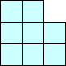 |
| 5 | 8 | 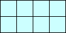 |
| 6 | 10 | 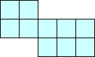 |
| 7 | 10 | 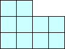 |
| 8 | 10 | 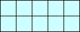 |
| 9 | 12 | 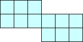 |
| 10 | 12 | 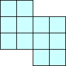 |
| 11 | 12 | 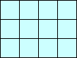 |
| 12 | 12 | 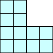 |
| 13 | 12 | 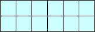 |
| 14 | 14 | 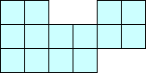 |
| 15 | 14 | 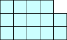 |
| 16 | 14 | 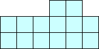 |
| 17 | 14 | 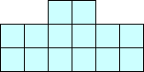 |
| 18 | 14 | 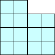 |
| 19 | 14 | 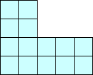 |
| 20 | 16 | 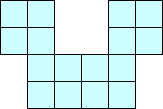 |
| 21 | 14 | 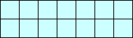 |
| 22 | 16 | 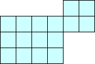 |
| 23 | 16 | 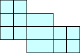 |
| 24 | 16 | 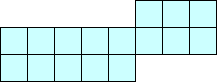 |
| 25 | 16 | 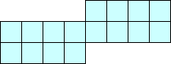 |
| 26 | 16 | 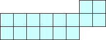 |
Sean Irvine provided this much more detailed list in 2023:
| n | 2n-ominoes | tileable | % tileable |
|---|---|---|---|
| 1 | 1 | 1 | 100.0% |
| 2 | 5 | 4 | 80.0% |
| 3 | 35 | 23 | 65.7% |
| 4 | 369 | 211 | 57.2% |
| 5 | 4655 | 2227 | 47.8% |
| 6 | 63600 | 25824 | 40.6% |
| 7 | 901971 | 310242 | 34.4% |
It certainly appears that the percentage of polyominoes that are tileable with dominoes is decreasing and approaching 0. Can anyone prove either of these observations?
Brendan Owen reports that 16 ≤ D(2000) ≤ 40. In fact, here is a 40 square self-descriptive checkerboard I found with 2000 domino tilings:
Trevor Green showed 30 ≤ D(2000) ≤ 36. His lower bound comes from L(n+1) ≤ 2L(n) and L(9) = 55, which imply L(14) ≤ 1760. The upper bound comes from this polyomino (which looks like a gun to me):
In 2005, I learned that others had worked on this problem. Yoshiyuki Kotani found the first shape that showed D(2000) ≤ 34 on the left. T. Arimatsu found another shape that shows this on the right.
| 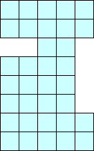 | 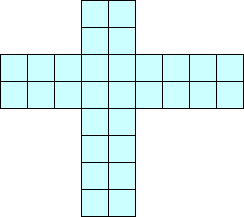 |
If you can extend any of these results, please e-mail me. Click here to go back to Math Magic. Last updated 1/15/05.